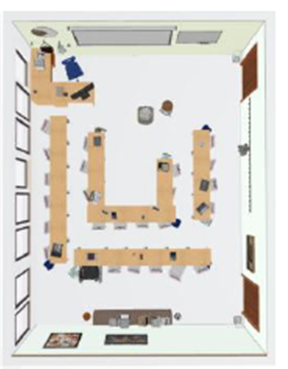
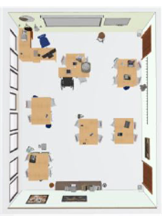
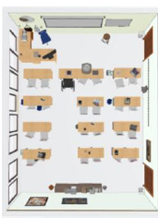

Título. “My World in English”
Descripción de la situación de aprendizaje
Etapa educativa y nivel: Educación de personas adultas – EOI Nivel A1
Áreas / materias: Inglés como lengua extranjera y Competencia digital
Agrupamientos y organización espacial:
1. Individual (tarea final) Grabación del audio .
2. En parejas (práctica oral y preparación de infografía))
1. Trabajo individual:
Actividad: Grabación del audio.
Objetivo: Fomentar la autonomía y la responsabilidad individual en el aprendizaje.
2. Trabajo en parejas:
Actividad: Diseño de la infografía y planificación y guionización del audio.
Objetivo: Facilitar la colaboración y el intercambio de ideas, permitiendo que el alumnado se apoye mutuamente.
Organización espacial:
1. Aula tradicional:
Distribución: Mesas en filas o en forma de U para facilitar la atención durante las presentaciones y la instrucción directa.
Uso: Sesión de introducción donde se presenta la información .

2. Espacios de trabajo colaborativo:
Distribución: Mesas agrupadas en islas o estaciones de trabajo para facilitar la colaboración en parejas y grupos pequeños.
Uso: Talleres de diseño gráfico y planificación del audio, donde los/las alumnos/as pueden trabajar juntos y compartir recursos.


3. Espacios de grabación:
Distribución: Área despejada con acceso a herramientas de grabación y edición de audio.
Uso: Sesión de grabación y edición del audio, donde el alumnado pueda grabar sus rutinas y trabajar en la edición.
4. Espacios de exposición:
Distribución: Área abierta con espacio para mostrar las infografías .
Uso: Presentación de proyectos, donde el alumnado pueda exhibir sus trabajos y recibir retroalimentación.
Se siguen principios del DUA para favorecer la inclusión y distintos estilos de aprendizaje.
Principios del DUA:
Proporcionar múltiples medios de representación: Utilizar diferentes formatos ( auditivo, textual) para presentar la información.
Proporcionar múltiples medios de acción y expresión: Permitir que los/las alumnos/as demuestren su aprendizaje a través de diferentes medios (infografías, audios).
Proporcionar múltiples medios de compromiso: Fomentar la motivación y el interés mediante actividades variadas .
Temporalización
4 sesiones de 60 minutos cada una: